一只猫来到我的身边，用温柔的摩擦声安慰我，让我感到不再孤单。
20250810-DSC00941 - Sun Aug 10 18:17:15 2025
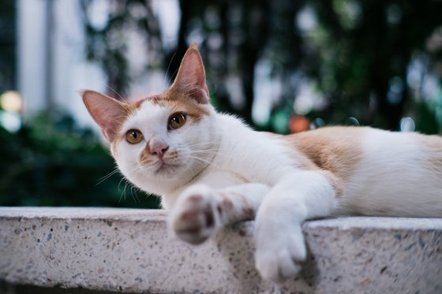
20250810-DSC00927 - Sun Aug 10 18:16:09 2025
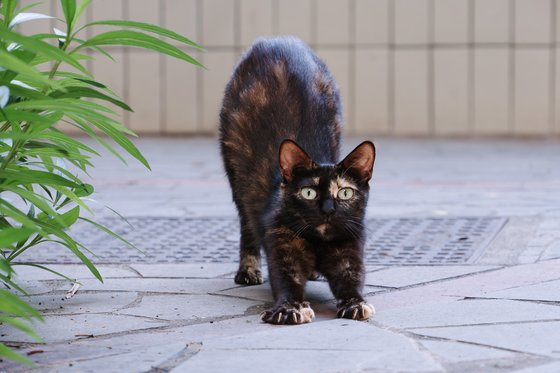
20250608-DSC07146 - Sun Jun 8 17:42:54 2025
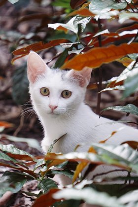
20250608-DSC07121 - Sun Jun 8 17:26:51 2025
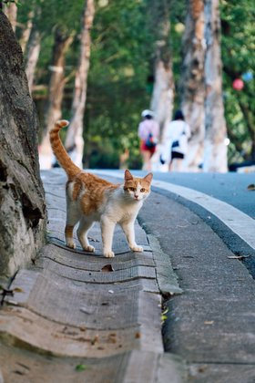
20250512-DSC04927 - Mon May 12 18:23:44 2025
20250512-DSC04918 - Mon May 12 18:21:01 2025
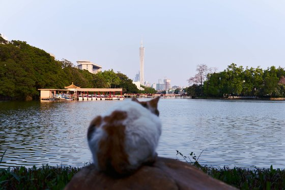
20250402-DSC02772 - Wed Apr 2 17:22:44 2025
20250311-DSC01173 - Tue Mar 11 16:02:07 2025
20250117-DSC09069 - Fri Jan 17 16:48:51 2025
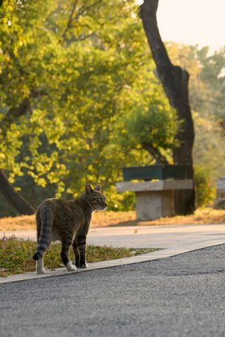
20250117-DSC09050 - Fri Jan 17 16:44:57 2025
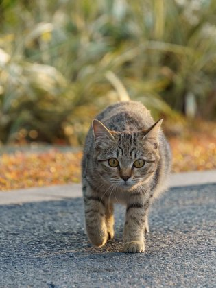
20250105-DSC07884 - Sun Jan 5 16:54:37 2025
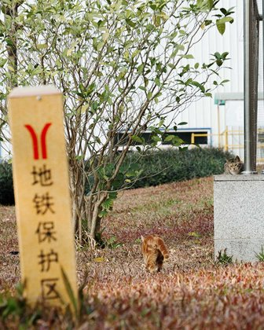
20250105-DSC07870 - Sun Jan 5 16:53:16 2025
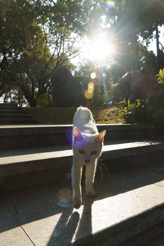
20250103-DSC07473 - Fri Jan 3 15:54:17 2025
沧桑的眼神。
20241201-DSC03086 - Sun Dec 1 15:00:48 2024
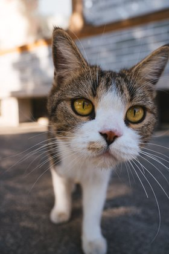
咪该？咩？什么？
20241201-DSC03068 - Sun Dec 1 14:47:57 2024
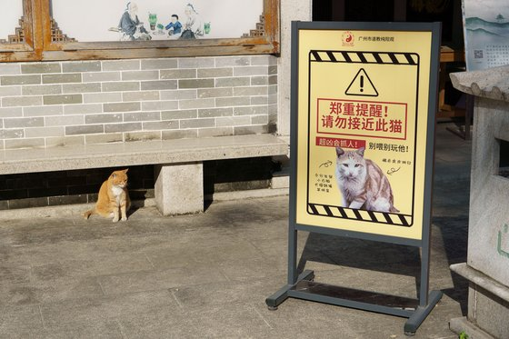
纯阳观——左边猫：别看了，坏猫不是我。
20241201-DSC03042 - Sun Dec 1 14:45:24 2024
我是小老虎！
20241130-DSC02615 - Sat Nov 30 10:02:43 2024
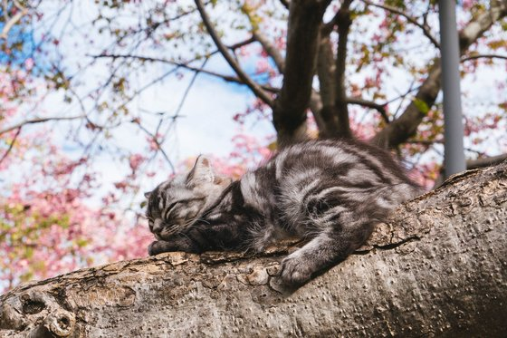
20241130-DSC02611 - Sat Nov 30 10:01:12 2024
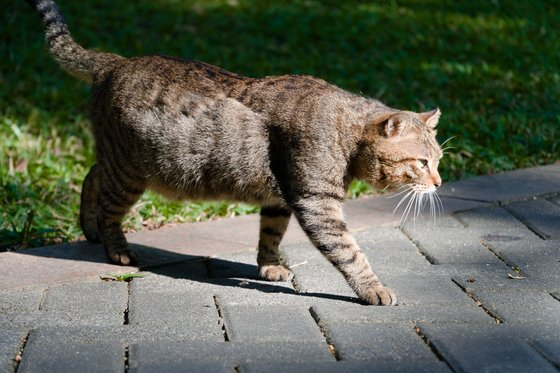
20241112-DSC00117 - Tue Nov 12 14:49:53 2024
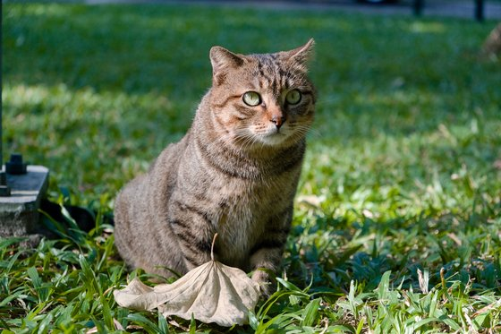
20241112-DSC00112 - Tue Nov 12 14:48:24 2024
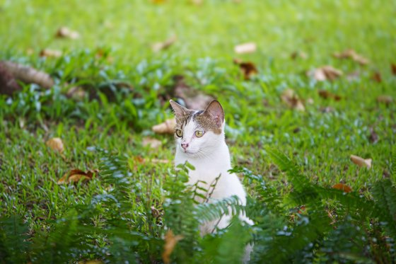
20241001-DSC08544-2 - Tue Oct 1 10:45:08 2024
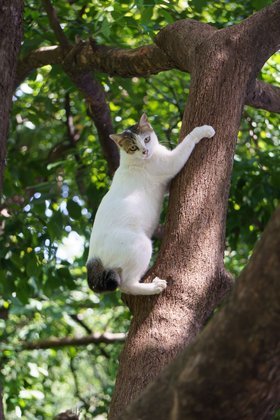
20241001-DSC08535 - Tue Oct 1 10:43:43 2024
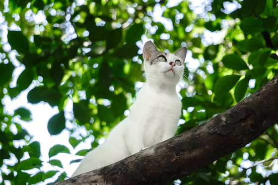
20241001-DSC08469 - Tue Oct 1 10:36:44 2024
20240930-DSC08419 - Mon Sep 30 17:56:37 2024
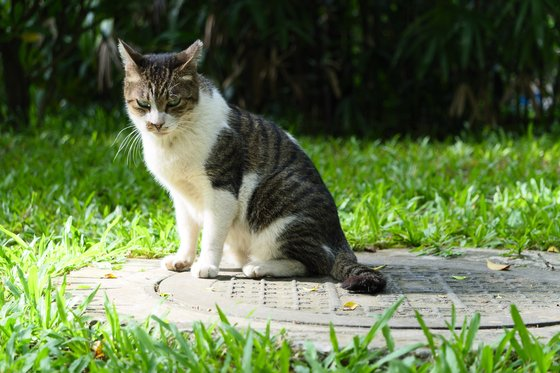
20240721-DSC06150 - Sun Jul 21 16:11:47 2024
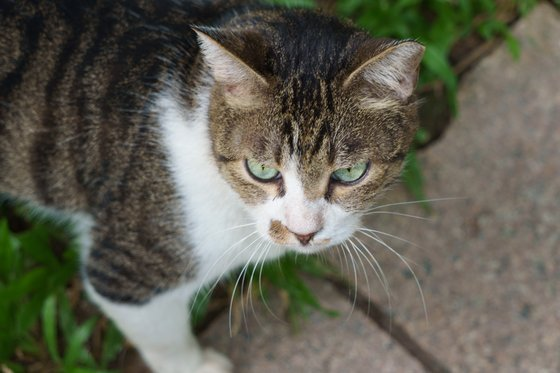
20240721-DSC06145 - Sun Jul 21 16:10:44 2024
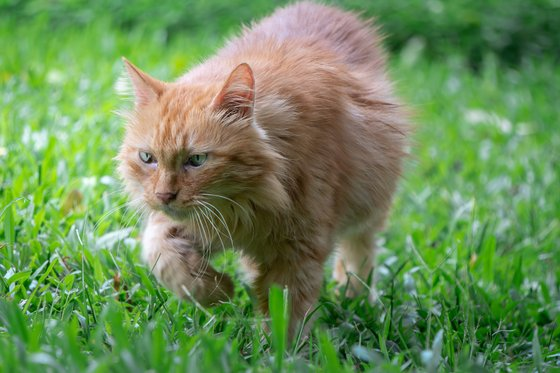
20240721-DSC06132 - Sun Jul 21 16:08:37 2024
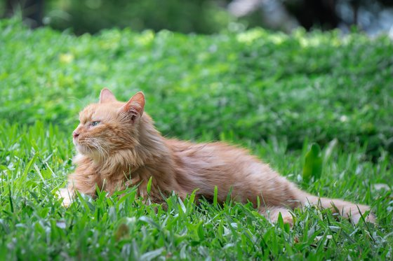
20240721-DSC06126 - Sun Jul 21 16:08:14 2024
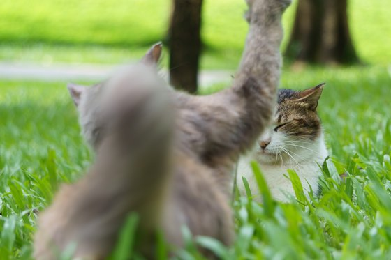
吃我一喵拳！
20240721-DSC06098 - Sun Jul 21 16:01:04 2024
20240710-DSC05765 - Wed Jul 10 18:36:49 2024
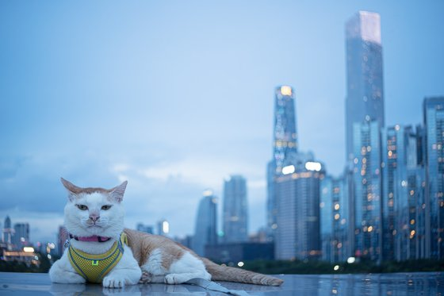
20240610-DSC04359 - Mon Jun 10 19:10:30 2024
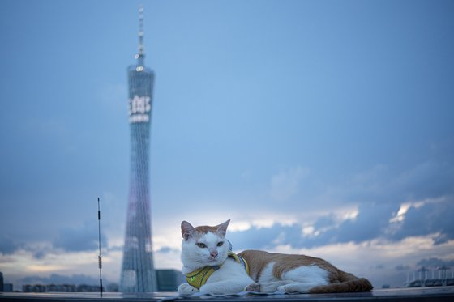
猎德大桥上的猫咪
20240610-DSC04335 - Mon Jun 10 18:57:25 2024
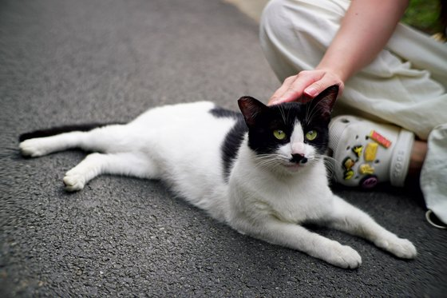
20240410-DSC01778 - Wed Apr 10 16:45:53 2024
流花湖公园——冬日的猫咪
20211209-P1000522 - Thu Dec 9 14:08:58 2021
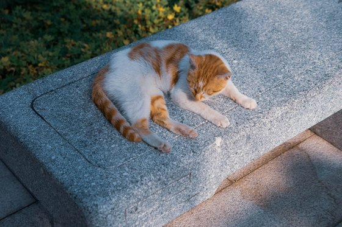
流花湖公园——冬日的猫咪
20211209-P1000521 - Thu Dec 9 14:08:32 2021
{kind=link}
{kind=link}
{kind=link}
{kind=link}
{kind=link}
{kind=link}
{kind=link}
{kind=link}
{kind=link}
{kind=link}
{kind=link}
{kind=link}
{kind=link}
{kind=link}
{kind=link}
{kind=link}
{kind=link}
{kind=link}
{kind=link}
{kind=link}
{kind=link}
{kind=link}
{kind=link}
{kind=link}
{kind=link}
{kind=link}
{kind=link}
{kind=link}
{kind=link}
{kind=link}
{kind=link}
{kind=link}
{kind=link}
{kind=link}
{kind=link}